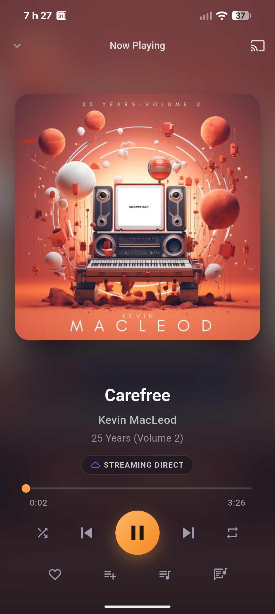
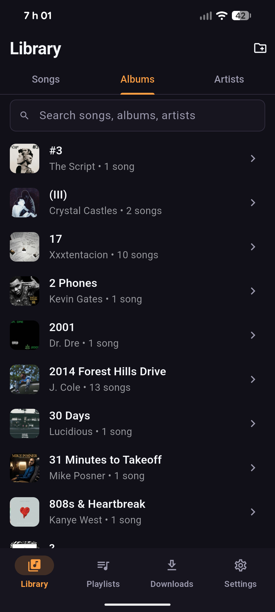
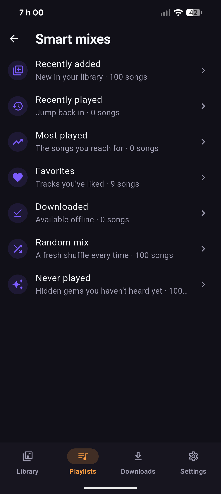
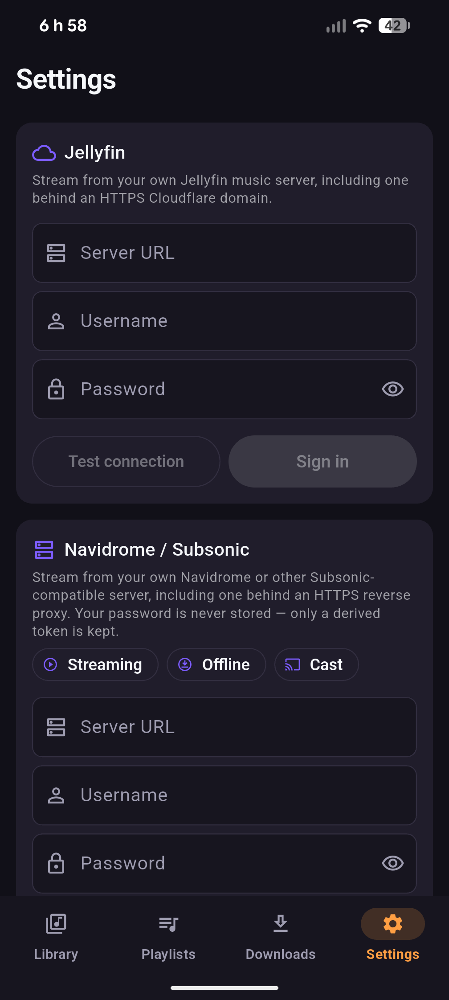
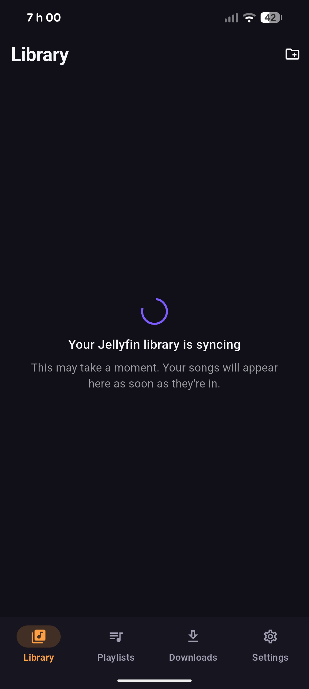
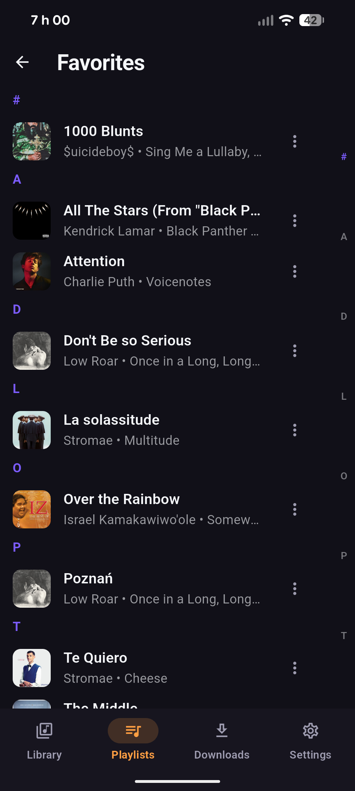

Open source · Android · Built in Canada 🇨🇦
Linthra
Built for local and self-hosted music.
Linthra plays the music you keep yourself: local files on your phone, or your own Jellyfin and Navidrome / Subsonic server. It streams straight from the source, with no ads and no account to sign up for.
Early alpha but usable for testing today. Install from F-Droid or sideload the APK from GitHub Releases. Not on Google Play yet.
Your music, your server
Point Linthra at a folder of local files, or at your own Jellyfin / Navidrome / Subsonic server, and it plays from there. Streaming is the default, so nothing downloads until you ask for it. Browsing stays quick because the app reads from a catalog it keeps on the device, instead of hitting the network on every tap.
Features
-
Local music playback
Pick a folder, scan it, and browse Songs, Albums & Artists with search. It uses the Storage Access Framework, so it never asks for broad storage access.
-
Jellyfin support
Connect your own Jellyfin server, sign in, and sync the library, then stream, cache and cast from it. Works over HTTPS. Playlists & favourites sync where the server supports it.
-
Subsonic / Navidrome
Stream, cache and cast from your own Navidrome server, or any Subsonic-compatible one. You bring the server and the account.
-
Background playback
A media notification with lock-screen, Bluetooth and wired-headset controls, plus shuffle / repeat and synced lyrics.
-
Offline cache
Download the tracks you want for offline play, with a size limit and a “Keep offline” pin. It only downloads when you ask, and stays on Wi-Fi unless you allow mobile data.
-
Android Auto
Browse your Library, Queue, Playlists and Favourites from the car screen and tap to play.
-
Privacy-friendly
No telemetry, no analytics, no ads, no account. Your server password is used once for a token, then discarded; the token is encrypted at rest and never logged.
-
Open source
Built with Flutter and licensed under MPL-2.0, so anyone can read the code, build it, and send a patch. Bug reports are assembled on your device and never sent automatically.
-
In development
Plex support
Read-only support for your own Plex Media Server is in progress, built in small steps that are easy to review. It hasn’t shipped yet.
Linthra is an unofficial, independent client. It isn’t affiliated with Jellyfin, Navidrome, Subsonic or Plex.
Screenshots
Real captures from a running build.






Get Linthra
Linthra is early alpha but usable for testing today. Install it from F-Droid, grab an APK from GitHub Releases, or get it on AndroidFreeware or OpenAPK. Obtainium can install straight from GitHub Releases and keep it updated.
Need help or found a bug? Contact us at support@linthra.ca.
Looking for older builds? See previous versions & changelog on GitHub.
Privacy first
No ads. No trackers. No analytics or telemetry SDK. No account, and no Linthra server. The app talks only to the music sources you configure and to your own local files.